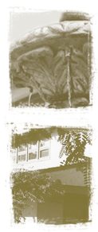

|

|

Wife. Mother. Daughter. Sister.
Friend. Our mission is to help the women who come to us
re-establish their vital roles within the community.
We strive toward this objective
by providing a sanctuary and support system dedicated
solely to the needs of alcohol- and drug-dependent women.
And by promoting "responsible recovery." That means equipping
women with the holistic life and relapse-prevention skills
they need to achieve long-term sobriety and a healthy
lifestyle. By emphasizing the spiritual, physical, emotional,
intellectual and social aspects of treatment, we help
our residents with every aspect of their lives so that
they may become whole women again, rather than a sum of
their dependencies. |
 |
|
|
 |
|